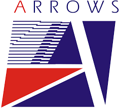
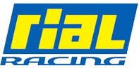
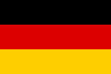
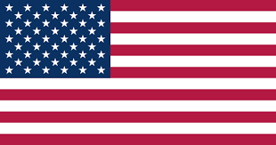
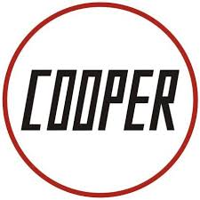

All Teams


Toyota Racing
2002 - 2009.


Arrows Grand Prix International
1978 - 2002.


Simtek Grand Prix
1994 - 1995.
Pacific Grand Prix
1994 - 1995.
Team Lotus
1958 - 1994.

March Engineering
1970 - 1992.
Onyx Grand Prix
1989 - 1990.

Rial Racing
1980 - 1989.
Zakspeed
1985 - 1989.
Team Haas (USA)
1985 - 1986.
Spirit Racing
1982 - 1985.
RAM Racing Team
1976 - 1985.
Team ATS
1977 - 1984.


Ensign Racing Team
1973 - 1982.
Shadow Racing Cars
1973 - 1980.

Willi Kauhsen Racing Team
1979 - 1979.
Interscope Racing
1977 - 1978.
Surtees Racing Organisation
1970 - 1978.
Hesketh Racing
1974 - 1978.
BS Fabrications
1976 - 1978.
Kojima Engineering
1976 - 1977.

British Racing Motors
1951 - 1977.
Team Penske
1974 - 1976.
Maki Engineering
1974 - 1976.
Vel's Parnelli Jones Racing
1974 - 1976.
Embassy Racing With Graham Hill
1973 - 1975.
Token Racing
1974 - 1974.

Goldie Hexagon Racing
1974 - 1974.

Trojan Racing
1974 - 1974.

Team Eifelland
1972 - 1972.
Connew Racing Team
1972 - 1972.

STP Corporation
1970 - 1970.


Cooper Car Company
1950 - 1969.
Anglo American Racers
1966 - 1968.
Honda Racing
1964 - 1968.
Scirocco Racing Cars
1963 - 1964.
British Racing Partnership
1958 - 1964.
Porsche
1957 - 1962.
Écurie National Belge
1955 - 1962.
Scarab
1960 - 1960.
Vanwall
1954 - 1960.
Écurie Écosse
1953 - 1954.

English Racing Automobiles
1950 - 1952.